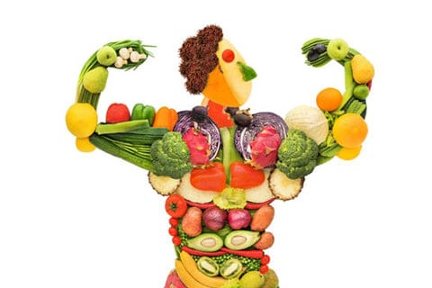
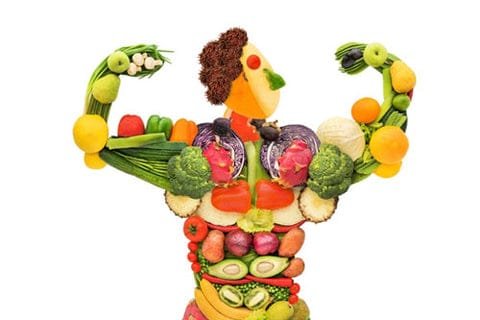

Reinos
La nutrición es una parte fundamental para mantener una vida saludable. Se refiere al proceso mediante el cual los organismos obtienen los nutrientes necesarios para su crecimiento, desarrollo, mantenimiento y funcionamiento.
Los nutrientes son sustancias presentes en los alimentos que nuestro cuerpo necesita para llevar a cabo sus funciones vitales. Estos nutrientes se dividen en macronutrientes y micronutrientes. Los macronutrientes incluyen carbohidratos, proteínas y grasas, los cuales proporcionan energía al organismo. Los micronutrientes son las vitaminas y minerales, que son necesarios en menor cantidad pero desempeñan una función esencial en diversas reacciones metabólicas.
Una dieta equilibrada y variada es clave para garantizar una adecuada nutrición. Esto implica consumir alimentos de todos los grupos, incluyendo frutas, verduras, cereales integrales, proteínas de origen animal y vegetal, lácteos o alternativas, grasas saludables y beber suficiente agua.
Una buena alimentación no solo se basa en los nutrientes que se consumen, sino también en la calidad de los alimentos y en la forma de preparación. Es importante reducir el consumo de alimentos procesados, altos en grasas saturadas, azúcares añadidos y sodio, ya que su consumo excesivo puede llevar a problemas de salud como la obesidad, enfermedades cardiovasculares, diabetes tipo 2 y otros trastornos.
La nutrición juega un papel fundamental en el crecimiento y desarrollo de los niños, así como en mantener la salud y prevenir enfermedades en todas las etapas de la vida. Además, una buena nutrición está relacionada con el rendimiento físico y mental, la capacidad de concentración, el sistema inmunológico y la prevención de enfermedades crónicas.
Es importante consultar con un profesional de la salud, como un nutricionista o dietista, para recibir una orientación personalizada en cuanto a las necesidades nutricionales individuales, ya que cada persona tiene requerimientos específicos según su edad, sexo, actividad física y estado de salud.
En resumen, una adecuada nutrición es esencial para mantener un estilo de vida saludable. Una dieta equilibrada y variada, junto con hábitos alimentarios saludables, contribuyen al bienestar general y previenen enfermedades a largo plazo.
 
REGRESAR

REGRESAR